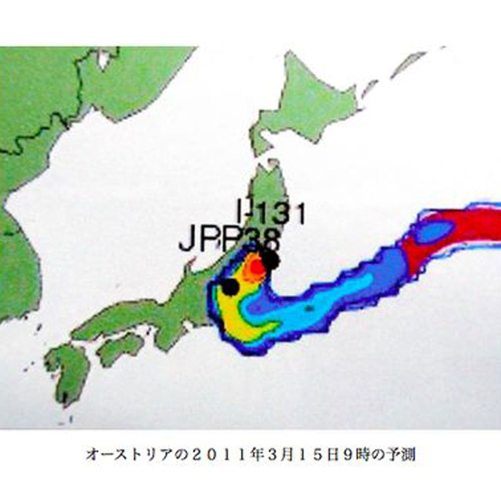

| プロメテウスの罠〔１４〕 吹き流しの町「ヨウ素剤を配布せよ」 (朝日新聞デジタルＳＥＬＥＣＴ) | |
| 朝日新聞 | |
| (2013) | |
福島第一原発から放射能の大量放出があった２０１１年３月１５日、原発から４５キロ西の福島県三春町では、午後１時から、４０歳未満のほぼすべての町民が、甲状腺がんを予防する安定ヨウ素剤を飲んだ。町は福島県にあるといっても原発とは無縁。原発の災害訓練などやったことがない。その三春町が、政府が混乱して明確な指示も出せないでいる１５日に、どんぴしゃり、町民を守る決断を下した。原発と無縁の町の勇気ある決断、その背景を探った。
内容紹介
福島第一原発から放射能の大量放出があった２０１１年３月１５日、原発から４５キロ西の福島県三春町では、午後１時から、４０歳未満のほぼすべての町民が、甲状腺がんを予防する安定ヨウ素剤を飲んだ。町は福島県にあるといっても原発とは無縁。原発の災害訓練などやったことがない。その三春町が、政府が混乱して明確な指示も出せないでいる１５日に、どんぴしゃり、町民を守る決断を下した。原発と無縁の町の勇気ある決断、その背景を探った。
初出
朝日新聞 二〇一二年七月七日～二十七日
第１章 東風だ、ヨウ素剤を
第２章 同じ匂いのする男
第３章 国から情報は来ない
第４章 初めて見た茶色の薬
第５章 対象７２４８人 薬はどこだ
第６章 明日は東風...まずい
第７章 釣りざおに運命託す
第８章 薬をどう飲ませるか
第９章 課長会やっから来い
第１０章 「みんな意見を言え」
第１１章 「責任は、俺が取る」
第１２章 山では決断し続けた
第１３章 町は配ると決めた
第１４章 マニュアルは無視だ
第１５章 不安にさせぬ言葉で
第１６章 今日こそ飲ませる日
第１７章 「町の底力」整然と
第１８章 そのころ、国と県は
第１９章 三春町のやり方で
第２０章 決断 それが現場
福島第一原発から放射能の大量放出があった１１年３月１５日、原発から４５キロ西の福島県三春町。
午前８時過ぎ、副町長の深谷茂（ふかやしげる）（６３）は、インターネットのニュースで、茨城県東海村で通常の約１００倍の放射線量が観測されたことを知った。
この日は、北風から東風に変わるとの予測があった。三春町は原発の真西。１００キロ以上離れた東海村でこの値だと、東風になれば三春にはもっと濃いのが来る。
風向きが気になった。
役場の屋上に前日立てた吹き流しを見に行った。ところがあっちを指したり、こっちを指したり。地形が複雑で、風が回っているのだ。
困った。４階の議長室に入ってきた深谷に、議長の本多一安（ほんだかずやす）（６２）がいった。
「沢石（さわいし）に立てよう」
沢石は標高４５０メートル。町一番の高台だ。本多は娘の千春（ちはる）（３４）に電話をかけた。千春は沢石の日帰り入浴施設「いぶき」に勤めている。
「そこんところ、吹き流しを立てて、風向きを教えろ」
千春は倉庫にしまってあった、幟（のぼり）用の白いポールを持ち出した。荷造り用の青いテープを何本か、１メートルぐらいの長さに切り、ポールの先に結びつけた。
午前９時、そのお手製吹き流しを施設の前のひらけた場所に立てた。テープが強い風をとらえ、真っすぐ横にたなびく。父に電話した。
「移ケ岳（うつしがたけ）の方から吹いてるよ」
東風だった。
一安は１０時、１１時、１２時と継続して風向きを見るようにといい、「写真に撮って、送れっ」といった。
深谷は町長室に向かい、町長の鈴木義孝（すずきよしのり）（７２）に決裁を求めた。
「東風です。準備した薬を、町民の方に今日、飲んでいただこうと思います」
午後１時から、４０歳未満のほぼすべての町民が、甲状腺がんを予防する安定ヨウ素剤を飲んだ。
町は福島県にあるといっても原発とは無縁。原発の災害訓練などやったことがない。町長以下、３日前まで原発や放射能に関する知識はゼロだった。
その三春町が、政府が混乱して明確な指示も出せないでいる１５日に、どんぴしゃり、町民を守る決断を下したのである。
原発と無縁だった三春町が、原発災害を意識するよう迫られたのは、大地震発生の翌日、１１年３月１２日のことだった。
「福島第一原発の周辺住民に避難指示が出ました。何人、受け入れてもらえますか」
町役場に急報が入った。福島県警からだった。
「６００人だ！」
副町長の深谷茂は、電話を受けた総務課長の橋本国春（はしもとくにはる）（６０）に、そう即答させた。
深谷は、小中学校などの体育館の収容力だけでなく、炊き出しの能力も考え、人数をはじき出した。
急な避難だから、おそらく身一つで逃れてくる。寝る場所だけでなく、食事も必要になる。
大地震のあった３月１１日、三春の町民向けに避難所を４カ所開いていた。だから、町にどのくらい食事提供力があるか、頭に入っていた。
深谷は大学では山岳部だった。山岳部員は年の１５０日は山で過ごす。調理の人員とかまどの数とコメの量から何人抱えられるか、とっさに計算するくせがついていた。
３月１２日の昼ごろ、受け入れが始まった。福島第一原発のある大熊町と、富岡町の人が、マイカーやバス、自衛隊のトラックでやってきた。
原発から三春町までは国道２８８号で一本。避難は夜になっても続き、６００人をすぐに突破した。
深谷は、町の公社が運営するレストハウス「田園生活館」も炊き出しに利用できることを思いつく。急いで追加手配した。
結局、三春町は予定の３倍以上の１９２５人を受け入れた。
翌３月１３日朝、深谷が詰めていた役場２階の町長室に、細身で彫りの深い顔立ちの男性が入ってきた。男は大熊町の農業委員会事務局長の石田仁（いしだじん）（５８）と名乗った。
「大熊町からの避難者の連絡員を務めます。お世話になります」
町民約１千人を受け入れてもらった礼を述べた石田は、そのうえ申し訳ないのですが、といった。
「机と電話とパソコンを貸していただけないでしょうか」
町長室のある２階フロアの一角に席を与えられた石田は、パソコンで原発事故のデータを集め始めた。
深谷は「なんと緻密（ちみつ）な人間だ」と感心した。自分が、どちらかというと「直感で動くタイプ」だからでもある。ただ、つながりも感じた。
「どこか同じ匂いのする男だ」
「同じ匂い」の理由は後でわかった。大熊町職員の石田仁は、三春町副町長の深谷茂と同様、大学時代は山岳部だった。
石田は借りたパソコンで、気象情報や原発事故の情報を取り出しては、三春町長の鈴木義孝と深谷に説明した。
石田の肩書は「大熊町農業委員会事務局長」。だが、その前は生活環境課に２０年以上も在籍している。町の災害時の住民避難対策にずっとかかわってきた。
もちろん原発事故の災害訓練も担当した。行政マンが知っておくべき原発や放射能の知識は、すべて身につけていた。
たとえば、原発が電源を失い、原子炉を冷やす手段を喪失した場合の手順。
ベントをして、炉の圧力を下げ、水を注ぎ込み、炉心を冷やす。
ベントをすると放射能が外部に放出されるので、住民は屋内退避や避難が必要になる――。
このようなことも、福島事故前から知っていた。
三春町の災害対策の陣頭指揮をとる深谷は、石田のおかげで、原発や放射能に詳しくなった。
石田は、避難所の連絡事務をこなしながら、パソコンを操作してドイツやアメリカなど外国政府の情報をどんどん引き出した。
石田は、避難中に自分が見聞きしたことと、テレビや新聞が伝える日本政府の発表内容に差があることに気づいた。だから、外国の情報を必死に探っている――。深谷にはそんなふうに見えた。
東京電力や県は、大熊町と安全協定を結んでいるのに、ほとんど情報をよこさなかったと石田はいう。
１１年３月１２日未明にベントをやるというので固唾（かたず）をのんで待ったが、音沙汰なしになった。そして午後３時３６分、突然１号機が松林の向こうで爆発した。石田は５キロ先にそれを見て、最後に大熊町から逃げてきた。
原発爆発という前代未聞のことが起きた。にもかかわらず政府は、放射能のデータをほとんど説明しないで「ただちに影響はない」という。
石田は「政府は情報を隠し始めている」といった。
深谷にも思い当たる節があった。
「県は、避難者をどこの町から何人受け入れたか聞くばかり。こちらの質問には何も答えてくれない」
深谷は石田から、国や県からは、本当に何も情報は来ない、ということを学んだ。
１１年３月１２日の福島第一原発１号機の異常で、４５キロ離れた三春町には、第一原発のある大熊町と、隣の富岡町からそれぞれ約１千人、計２千人弱が避難してきていた。
翌３月１３日。
三春町の保健師竹之内千智（たけのうちちさと）（３２）は、富岡町の人たちのいる避難所を巡回していて、変わった薬を目にした。
２粒ずつシートに入った茶色の丸薬。それが箱に入れられて、避難所の入り口にたくさん置いてある。箱には「ヨウ化カリウム丸（がん）」とあった。
竹之内はグループ長の保健師佐久間美代子（さくまみよこ）（４８）に報告した。
「富岡の人たちの避難所でヨウ化カリウム丸という薬を見ました。飲み方を尋ねられました」
佐久間は町内の薬局にまず聞いてみた。
「そちらに、ヨウ化カリウム丸という薬はありますか」
なかった。が、甲状腺を守る安定ヨウ素剤のことだとわかった。
三春町による「安定ヨウ素剤を必要な全町民に飲ませる」という取り組みは、佐久間のこの「初歩の初歩」の質問から始まった。
副町長の深谷茂は、三春常駐となった大熊町の石田仁に聞いてみた。
石田は知っていた。というより、原発が立地する大熊町や富岡町の人には、防災教育で常識となっている薬だった。
のどにある甲状腺は、ヨウ素を取り込みやすい。
原発事故が起きると、大気中に放射性ヨウ素が放出される。それを吸い込むと甲状腺に取り込まれる。そこで放射線を出し、甲状腺がんを引き起こす原因になる。
旧ソ連のチェルノブイリ原発事故のとき、子どもを中心に甲状腺がん患者が出た。
安定ヨウ素剤を飲み、甲状腺を放射性でない普通のヨウ素で満たしておくと、放射性ヨウ素は甲状腺に入れず、体外に排出される。
問題は飲ませるタイミングだ。
飲んでから２４時間たつと甲状腺がんの予防効果はなくなる。副作用の恐れから、２度３度とは飲めない。だから早すぎる服用はだめだ。
放射性ヨウ素は無色無臭で、機器で測定しないと、漂ってきたかどうか分からない。
三春町の職員にとって初めて知る薬だが、町で準備することはできるのだろうか。調べようということになった。
大地震発生３日後の１１年３月１４日午前１１時１分。福島第一原発の３号機が爆発した。
福島中央テレビがとらえたその瞬間のスクープ映像を、多くの福島県民が見た。
画面は、１号機のときより高く舞い上がる粉じん雲をとらえていた。粉じんの色は１号機のより黒く、一部は赤茶色に見えた。
三春町の職員は、放射能について急速に知識をつけ、安定ヨウ素剤の配布の検討を始めていた。３号機の爆発を受け、副町長の深谷茂は福島県に、県内の放射線量の測定結果を出すよう要請した。
答えは「分からない」だった。
こんなことでは、町独自で安定ヨウ素剤服用の備えをするしかない。薬について徹底的に調べ、準備をしよう。動きは素早かった。
課長工藤浩之（くどうひろゆき）（５６）が率いる保健福祉課の職員は、原子力安全委員会のホームページを検索した。そこで知ったことを町内の医師、薬剤師に確認する。
服用のタイミング。副作用。４０歳未満の人が飲む薬となっている。子どもにどうやって飲ませるか――、などがわかった。
さて、肝心の薬はどこにあるか。県の災害対策本部に聞いてみた。
「数がわかっていて、こちらに取りに来るなら、渡しますよ」
なんということ。すぐにコンピューターで住民情報を検索した。町内の４０歳未満は７２４８人だった。
コンピューターにこの７２４８人を入力し、対象者はどの世帯に属しているかを探した。世帯数は３３０３だと分かった。
ここまでやっておけば、必要な薬の数もわかるし、配布方法も検討できる。すぐに保健師の竹之内千智らが取りにいった。
深谷は、最も判断がむずかしいのは服用のタイミングとみた。大熊町の石田仁に尋ねた。
安定ヨウ素剤は国の指示や県知事の判断で飲ませることになっている。石田はそれをふまえた上で、次の三つが検討材料になるといった。
一、原発の爆発
一、そのときの風向き
一、降雨があるか
石田は国の放射能拡散予測ＳＰＥＥＤＩ（スピーディ）が参考になるという。しかし、国はそれを出してこない。
「でも、これを見てください」
石田はなんと、そのＳＰＥＥＤＩと同じような図を持っていた。
大熊町職員の石田仁が持っていた「ＳＰＥＥＤＩ（スピーディ）みたいな図」は、ノルウェーとオーストリアの気象研究機関がつくった放射能の拡散予測図だった。
借用のパソコンであれこれ検索しているうちに、石田はその二つのホームページにたどりついていた。
１９８６年のチェルノブイリ原発事故をきっかけに、ヨーロッパ諸国は放射能が自分の国にいつ、どのくらい飛んでくるかを予測する技術をみがいた。
彼らは福島での原発事故発生後、ただちに日本の気象データを取り寄せ、予測をつくり、インターネットで公開していたのである。
ホームページにはカラーの動画があり、放射能がこのあとどう広がっていくか、コマ送りのように見られるようになっていた。
ただし彼らは「放射能が国境を越えて、どの方向にどう広がるか」を国際規模で知るのが目的だ。福島県内の市や町など、狭い範囲の情報が分かるものではない。
風のデータもかなり上空のものを使っているようだ。ＳＰＥＥＤＩのように、山や川など細かい地形も考えてはいない。
１１年３月１４日の段階で、日本政府はＳＰＥＥＤＩのデータを持ちながら、国民に出さなかった。
しかし、三春町の幹部職員は、ＳＰＥＥＤＩと同じ概念の予測図を、石田のおかげで目にすることができたのである。

石田が示したノルウェーとオーストリアの予測によると――。
３月１４日のうちは北風で、放射能は福島第一原発から南の方に流れる。
３月１５日になると風は東に変わり、放射能は西の方に流れる。
三春町は福島第一原発の真西４５キロにあり、東風がまずい。
石田はいった。
「明日１５日は警戒が必要です」
チェルノブイリ事故のとき、ポーランド政府は、子供の甲状腺を守るため、全国で一斉に安定ヨウ素剤を飲ませた。石田は三春町幹部にその話もした。
三春町副町長の深谷茂は悟った。とにかく、風向きを知ることが大事だ。
それに、この予測は外国の機関が分析したものだ。実際にどんな風が吹くか、自分の目で確かめなければならない。
そうだ、あれを使おう。
深谷は急いで、あるものを家に取りに帰った。
三春町の副町長深谷茂がわざわざ自宅に取りに帰ったもの。それはイワナ釣り用の渓流ざおだった。
長さ３・６メートル。カーボンファイバー製だけあって超軽量で、１３万円もした。
それを何年か前、手元から６０センチぐらいのところで壊してしまった。捨てることもできず、なんとなく家に置いていたのだ。
釣りざおを手に役場に戻った深谷は４階建て庁舎の屋上に上がった。さおに、荷造り用のテープを切って何本か結びつけた。
アンテナのポールに、粘着テープでぐるぐる巻きにして固定した。高さ４メートルの吹き流しが完成した。
方位を確かめようと、コンパスをポケットから取り出した。ところがコンパスの調子が悪く、方位がよく分からない。
困っていると教育長が、向かいの三春小学校から授業で使う方位磁石を持ってきてくれた。深谷は教育長といっしょに、ポールから少し離れた所に粘着テープでバツ印を描き、Ｅ、Ｗ、Ｓ、Ｎと方位を記した。
「これで職員の誰が見ても、方位を間違うことはない」
屋上から南を見下ろすと、河野広中（こうのひろなか）の銅像が東を向いて立っているのが見える。三春に生まれた明治時代の自由民権運動のリーダーだ。
広中が見すえる方向から風が吹いたとき、三春町は決断を迫られることになる。
そのころ、福島第一原発は、深刻な状況に陥っていた。
１１年３月１４日午前１１時１分、３号機が爆発した。この爆発で隣の２号機のベント弁の電気回路が壊れた。
２号機は前日までに、原子炉の圧力が限度を超えれば自動的にベントが実行される、という状態にしてあった。それが不可能になった。放っておけば炉内の圧が高まって原子炉は破裂してしまう。
東京電力は３月１４日午後４時３４分、車からかき集めたバッテリー１０個を使い、原子炉の圧力容器の逃し安全弁を開けるという非常手段をとる。が、弁はすぐ開かず、開いた後も圧力はなかなか下がらない。
７００人ほどいる福島第一原発作業員のうち最小限の人員を残して、あとはみんな１０キロ離れた福島第二原発に避難する――。東電は、原発の制御放棄も考えなければならないところまで追いつめられていた。
三春町役場の屋上で吹き流しをつくっている深谷には、そんな状況は伝わらなかった。
大地震発生３日後の１１年３月１４日午後、三春町の副町長深谷茂が、役場の屋上に吹き流しを立てた。
そのころ保健福祉課長の工藤浩之は、保健師らが福島県の自治会館でもらってきた安定ヨウ素剤を、どうやって配るべきか検討していた。
入手したのは、１粒５０ミリグラムの丸薬と、水で溶かして飲む、子ども用の粉末。住民情報で特定した人数分だった。
技術的な問題が浮かび上がった。安定ヨウ素剤は、年齢で飲む量がそれぞれ違うのだ。
生後１カ月未満は１６・３ミリグラム。
３歳未満は３２・５ミリグラム。
１３歳未満は５０ミリグラム。
４０歳未満は１００ミリグラム――。
３歳以上１３歳未満は丸薬１錠、１３歳以上４０歳未満は丸薬２錠分だから、それは薬を渡すだけですむ。
しかし問題は小さな子どもだ。原子力安全委員会のホームページにある資料には、６歳以下には安定ヨウ素剤の粉末を、滅菌蒸留水か精製水か注射用水で溶かし、適量のシロップを加えて、正確な服用量を飲ませるのが適当、という記述もある。
それぞれの配布場所で、そんな煩雑なことを、大勢の新生児・乳幼児相手にできるわけがない。
事前に１カ所で溶液をつくり、滅菌された注射器に分けて入れ、配布場所に運んでおく、という方法を考えた。注射器は町立三春病院が提供してくれる。しかし、粉末を正確に量り、精製水で溶かす手段がない。
国のマニュアルには現場感がない。工藤は「新生児、乳幼児にも、丸薬を砕いて飲んでもらうしかない」と考えた。
しかし、それでは、自治会館まで丸薬を追加でまたもらいに行かなければならない。往復で２時間近くかかる。
もう一つの課題は、「国の指示や県知事の判断で飲ませる」と定められているものを、町の判断で勝手に飲ませていいのかどうか、ということだった。
いろいろ考えなければいけないことがあった。
一、副作用が出た場合の責任。
一、飲ませないで、将来、甲状腺がん患者が出たときの責任。
迷った総務課長の橋本国春は午後８時ごろ、家に戻っていた深谷に相談の電話をかけた。
深谷はいった。
「課長を全員集めろ。課長会を開く」
１１年３月１４日の夜９時、三春町の課長１２人全員に「課長会やっからすぐ来（こ）ーっ」と招集がかかった。
みな３月１１日の大地震発生から働き詰めで、家に戻っていない者もいた。３月１４日は町長から「家で風呂に入って、体を休めるように」といわれ、自宅に帰っていた。そこに「とにかく集まれ！」と指示がきた。
三春町は日ごろからひんぱんに課長会を開いている。副町長を加えた１３人が顔を合わせ、横の事務連絡をしっかりやるためだ。
夜の１０時、庁舎から２００メートルほど離れた保健センターで会議が始まった。そこには、県から調達した安定ヨウ素剤が運び込まれていた。
保健センターはコンクリート打ちっ放しの建物だ。玄関を入ってすぐのカーペット敷きのホールに、作業服姿で集まった。
しかし、いすが足りない。副町長の深谷茂ら数人がいすに座り、何人かがカーペットの上に車座であぐらをかいた。深谷が会議を仕切った。
課長の何人かは安定ヨウ素剤というものがあることに気づいていた。
大熊町や富岡町からの避難者が入る体育館で３月１３日夜から宿直をしていた財務課長の村上正義（むらかみまさよし）（５９）。村上の後に体育館に入った産業課長の新野徳秋（しんののりあき）（５１）。避難者への炊き出しを切り盛りする生涯学習課長の遠藤弘子（えんどうひろこ）（５５）らだ。
しかし、３月１３、１４日の２日をかけて安定ヨウ素剤について調べまくった保健福祉課長の工藤浩之以外は、それがどういう薬か詳しくは知らなかった。
冒頭、工藤が安定ヨウ素剤の説明をすることになった。工藤はカーペットに体育座りで、仕入れたヨウ素剤に関する知識を、ありったけしゃべった。
放射能が来る前に飲むと甲状腺がその安定ヨウ素で満たされ、放射性ヨウ素が入ってこないので、甲状腺がんを予防できること。
だから放射能がやって来る直前に飲むのがよいこと。
放射能が来てからでも数時間以内に飲めば効果があること。
飲んでから２４時間で体外に排出されてしまうので、飲むのが早過ぎると効果がないこと。
吐き気など副作用が出る場合があること。
ただし、チェルノブイリ原発事故の際、ポーランドでは重篤な副作用例はなかったこと――。
工藤は飲んだ場合のメリット、デメリットを説明した。
１１年３月１４日の夜１０時に始まった三春町の課長会。保健福祉課長の工藤浩之が安定ヨウ素剤について説明した後、議論に移った。
午後１０時半ごろ、税務課長の佐久間収（さくまおさむ）（５５）が遅れて着席し、１３人全員がそろった。
議事を進行する副町長の深谷茂が発言した。
「俺はこの薬を配ろうと思う。みんなの意見を聞きたい。質問はするな。意見をいえ」
車座に座る課長たちが、反時計回りに一人ずつ意見をいった。
財務課長の村上正義は反対意見だった。理由として、放射能が本当に漏れているのかどうか、情報がないことを挙げた。
副作用のある薬を、「漏れているらしい」という情報しかない段階で飲ませていいのか――。
産業課長の新野徳秋も反対した。
「配ることイコール、三春町はもう被曝（ひばく）をしている地域なんですよというのを、一般町民に知らしめることになってしまう。それでいいのだろうか」
新野は、配れば町として危機を認めることになり、住民が不安になりはしないかと考えたのだ。
税務課長の佐久間は、配ることに賛成だとした。
「とりあえず配っておいて、飲むタイミングについては、たとえば防災無線とかそういうので周知する。配っておいて、何か別の方法で、飲んでくださいと通知するというやり方をとるべきではないか」
安定ヨウ素剤を県から取り寄せ、配る準備に入っていた工藤は、配ることに賛成した。
飲ませないで後にかなりの濃度の放射能が来ていたとわかった場合と、飲ませてそれほど放射能は来なかったという場合を比べると、後者の方がいいのではないか――。
そのころ、東京電力福島第一原発２号機は深刻さを増していた。
午後９時３５分、原発の敷地境界にいたモニタリングカーが毎時７６０マイクロシーベルトという高い放射線量を計測した。
午後１０時５０分には、格納容器の圧力が最高使用圧力を超えた。
午後１１時ごろには駐日米国大使のルースが、官房長官の枝野幸男に対し、アメリカの原子力の専門家を官邸に常駐させたいと、電話で要請してきた。
そうしたことは、深谷たち１３人には全く伝わってこなかった。
三春町は、安定ヨウ素剤の存在に気付いてから１日あまりで、必要な数をそろえた。
しかしそれを配るには、町の枠を超えた決定をする必要があった。
国は、原子力災害対策本部長が原子力安全委員会の助言を得て判断し、現地対策本部長が投与を指示する態勢をとっていた。
福島県の地域防災計画は「県は国から予防で飲むタイミングの指示があった場合、または知事の判断で服用を指示する」と定めていた。
三春町が町の判断で配ることは、こうした決まりに反することになる。万が一、重い副作用が発生した場合、責任問題が発生する。
ただ三春町は、大熊町職員の石田仁のおかげで、国が公表すべき放射能拡散予測システムＳＰＥＥＤＩのデータを隠していることに「町として」気づいていた。
さらに外国の気象機関が、１１年３月１５日は原発の西に放射能が広がると予測していることも知った。
薬も用意した。
もし予測通り放射能がこちらに来てしまったらどうするか。ここまでやって「町の権限ではない」と何もしないなら、それは国や県といっしょに住民を裏切ることだ。となれば、何としても放射能の状況をつかみ、最も必要なタイミングで薬を飲んでもらう――。だから副町長の深谷茂は課長会を催したのだった。
三春町の１２人の課長それぞれの意見表明が終わった。
放射能が出ているかはっきりしないうちに副作用のある薬を配るべきでないという意見。
町として決定して配れば住民に不安を与えてしまうという意見。
とりあえず配り、防災無線で飲む時期を知らせるべきだとする意見。
賛否両論、出そろった。
時計は深夜１１時を示していた。
数メートル離れたところで、保健師たちが、議論の行く末を見守っていた。配ると決まれば、さらに準備を急がなければならない。
課長全員の意見を聞き終わって、深谷はまとめた。
「リスクはあるがそれ以上の効果がある。やった方が町民の将来につながる。だから、配ることにする」
そしてこう付け加えた。
「責任は、俺が取る」
生涯学習課長の遠藤弘子は気づいた。
「この課長会は、深谷さんが、自ら覚悟を決めるために開いたんだ」
「深谷あっ、やめろーっ」
「やめろって、これ行くしかねぇべ。任せろっ」
１９６８年１２月２０日午後４時、富山県の剱岳（つるぎだけ）山頂を馬場島（ばんばじま）方面に下った早月尾根（はやつきおね）。東京農業大学山岳部２年の深谷茂は、４人の縦走隊の先頭に立って吹雪の中を進んだ。
縦走隊はこの日午前６時半、剱御前小舎（つるぎごぜんごや）を出発した。晴れていた。１日で登頂し、馬場島まで下る計画を立てる。余分な食料は捨て、２日分だけ持って出た。その晴天が、急に吹雪に変わったのだ。
冬山では、雪崩に巻き込まれないよう、尾根の上を歩くのが基本だ。だが、風が強過ぎて吹き飛ばされそうだ。深谷は、尾根のすぐ下の斜面を尾根方向に横断して歩くことを選択した。
４人は２人ずつザイルで結び、スタカットという方法で山を下った。１人が安全な場所でザイルを確保。その間にもう１人が進む。２０～３０メートル行ったところでしっかりザイルを確保し、最初にザイルを確保していた者を引き寄せる。尺取り虫のような形で進む方法だ。
先頭の深谷が一歩進むごとに、足を着いたところの雪が雪崩となり、ストーン、ストーンと谷底めがけて落ちていく。
それで、後に続く先輩が止まれと叫んだのだ。しかし深谷は止まらない。２時間かけ１００メートル下った。
カニのハサミと呼ばれる岩の陰にくぼ地を見つけ、雪をならしてテントを張った。一つ張るのがやっとの場所だった。
カニのハサミでは５泊した。２３日に、一度下ろうとしたが、１時間ほど進んだところで吹雪がひどくなり、元の場所に引き返した。
カニのハサミではテントの中にいる者に、自分に巻きつけたザイルを持ってもらい、テントから身を乗り出して用を足した。雲間から、富山市の明かりがちらちら見えた。
１２月２５日、吹雪が小やみになった。一気に下山した。剱岳はその後、また吹雪に見舞われた。
この冬、剱岳周辺では、翌年１月１１日までに１３２人が閉じ込められ１８人が死んだ。史上最悪だった。この冬は海も大荒れで、最新鋭の鉱石運搬船ぼりばあ丸が野島崎沖で真っ二つに折れ、沈没したほどだった。
山では常に決断を迫られる。どんなに真剣に取り組んでも、判断を五つ間違えたら死ぬという。
「俺のは四つまでだったから、こうして生きている」
三春町副町長の深谷茂は、決断というものの重要さ、決断がもたらす影響の大きさを、大学山岳部時代に心に刻み込んだ。つまりはリーダーとしての心得である。
大学山岳部は当時、冬に、何という山を、どのルートで登ったかで、他校と競い合っていた。４年生で登った冬山が難しければ難しいほど誇りとなる。
１９７０年、深谷は４年生となり、主将になる。あの剱岳（つるぎだけ）を小窓尾根（こまどおね）からアタックすることにした。
２年生のとき上りに使った別山（べっさん）尾根、下りに使った早月（はやつき）尾根はともに一般ルートといわれる。一方、小窓尾根ルートは、急峻（きゅうしゅん）な岩場と深い谷が続くためルートを見誤りやすく、未熟者を寄せ付けない。
冬前に偵察を繰り返し、荷揚げもして準備万端整え、冬合宿に入ろうとしたとき、妹から電話があった。
「お母さん、あと２カ月、もたないって」
それでも深谷は山に入るつもりだった。しかし、監督に諭される。
「お前がそんな状態をかかえて山に入り、もし判断を誤ったら、後輩たちはどうなる」
考え直し、「４年生の冬山」を断念した。それも決断だった。
話を２０１１年３月１４日午後１１時に戻す。
安定ヨウ素剤の配布を課長会で決めた深谷はただちに、町長の鈴木義孝に報告した。
「わかった」
鈴木は、深谷や課長たちに全幅の信頼を置いている。課長会として決めたと聞くと、議論の経過も理由も聞かず、了解した。
三春町が、町独自の判断で安定ヨウ素剤を住民に配布することが正式に決まった。
深谷は、議長の本多一安にも電話で報告した。娘に吹き流しを立てさせる、あの本多だ。
大地震発生いらい、三春の町議会は町の執行部と連絡を密にして対策に取り組んでいた。
議会は本来、執行部のすることをチェックする機関だが、三春町議会は当事者意識を持って積極的に動いていた。議長が娘に、東風が吹いたという証拠となる写真を撮っておけと指示したのは、その表れだ。
深谷は町長室と議長室の間を頻繁に往復し、町の執行部と議会の意思疎通に努めた。
三春町の意思決定の思い切りのよさ、速さは、こうした積み重ねの上に立っていた。
福島県三春町は１１年３月１４日の夜１１時過ぎ、安定ヨウ素剤を配ることを決定した。安定ヨウ素剤というものがあると知ってわずか１日余の決断だった。
乳幼児にどうやって飲ませるかという問題。それは、保健福祉課長の工藤浩之が解決した。国のマニュアルを無視し、丸薬を砕いて飲ませることにしたのである。
工藤は、それに先だって三春町に避難してきた大熊町、富岡町の人に尋ねている。彼らはそれでいいのだといった。両町の人たちも、丸薬を透明な袋に入れたままたたきつぶし、粉々にして飲ませるという。
国のマニュアルには「粉末タイプの安定ヨウ素剤を、滅菌蒸留水か精製水か注射用水で溶かし、シロップを加えてスポイトで適量を飲ませる」とある。しかし、災害でどたばたしている最中にそんな余裕があるはずはなかった。
ただこの結果、日中、県から粉末でもらってきた分を丸薬に交換する必要が出てきた。県に聞くと交換オーケーということなので、昼間取りに行った保健師の竹之内千智がまた行くことになった。
夜道を、町有車のスプリンター・カリブで福島市に走った。運転は建設課長が務め、交代要員として産業課長の新野徳秋も乗り込んだ。
県の災害対策本部がある自治会館に着いた。どういう計算をしたのか分からないが、県はかなり多めに薬をくれた。
建設課長は帰りもハンドルを譲らなかった。道が悪かったのか、竹之内は少し車酔いして三春町の保健センターに戻ってきた。３月１５日午前１時を回っていた。
安定ヨウ素剤は世帯ごとに配ることにした。個人個人に配るとなると、日中留守にしているなどの理由で、行き渡らない人が多く出ると考えた。
世帯ごとに配布対象者を束ねる名寄せデータづくりは順調に進んでいた。住所と世帯主の名があり、その下に配布対象者名と、それぞれが服用すべき粒の数が並ぶデータが、パソコンの中で完成した。
このデータをラベル用紙にプリントアウトし、封筒に貼れば、あとはそのラベルを見ながら、薬を必要な数ずつ封筒に入れていけばよい。
しかし、夜中になって、保健センターには、ラベル用紙も封筒もまったく足りないことがわかった。課員総出で役場中を回り、かき集めた。
保健福祉課員による封筒のラベル貼りは徹夜で行われ、日付が変わって１１年３月１５日の午前４時ごろ終わった。
これで安定ヨウ素剤の袋詰め作業が始められる。夜明けには各課から計３０人の応援が来るはずだ。
そこで、保健福祉課長の工藤浩之は、課長会で出た課題に取り組み始めた。
第一の課題は副作用問題。課長会で財務課長の村上正義がいった「副作用のある薬を飲ませていいのか」という問いかけへの対応だ。
大熊町や富岡町など原発立地町の町民は、防災訓練で安定ヨウ素剤がどのような薬であるか知っている。しかし、三春町の人は知らない。
インターネットで調べ、町内の医師や薬剤師に確認したことを、紙１枚にまとめ、あらかじめ全対象世帯に配ることにした。
紙には、服用してはいけない方として「ヨウ素過敏症（ヨウ素系の消毒薬などで腫れたことがあるなど）造影剤過敏症（検査でショック状態となったなど）の既往のある方は、服用するとアナフィラキシーショックとなる恐れがあります。低補体性血管炎やジューリング疱疹（ほうしん）状皮膚炎の既往のある方」と明記した。
副作用として「服用後、発疹・発熱・頭痛・吐き気などの症状がでる場合があります。医師に相談してください」とも書いた。
あの震災のどたばたの中、服用の手引をつくったのである。
課題の第二は住民の不安の問題。これも課長会での産業課長新野徳秋の「配れば、三春町も、もう被曝（ひばく）を受ける地域なんですよというのを町民に知らしめることになる」との発言への対応だった。
確かに、防災無線でいきなり「薬を配るから取りに来るように」とやってしまうと住民は不安に陥る。
そこで、町長名で「町民の皆様へ」という文書を前もって配り、読んでおいてもらうことにした。その後、防災無線で呼びかける「二段構え」だ。副町長の深谷茂は、住民を不安に陥れないよう、文言を丁寧に修正した。
原稿に数カ所あった「放射性被ばくによる」という文言は「放射能による」に変えた。
課長会で出た意見は、賛成意見も反対意見も、どちらも住民の声を代表したものだ。しかも、村上や新野は避難所に詰めていた。避難者の気持ちもくんでいる――。
深谷は反対意見もちゃんと聞いていた。
福島県三春町の保健センターで封筒へのラベル貼りが終わった１１年３月１５日午前４時過ぎ。首相の菅直人（かんなおと）に呼び出された東京電力社長の清水正孝（しみずまさたか）が、永田町の首相官邸に入った。
暴走する原発を前に、官邸の東電不信は極みに達していた。
菅は、福島第一原発を直接の指揮下に置くため、東電と政府を一体化した事故対策統合本部の立ち上げを清水に通告する。午前５時半過ぎには東電本店に乗り込んで、本店幹部を叱咤（しった）した。
だが、原発の状況はよくない方向に進んでいた。
菅が東電で叱咤していた午前６時、４号機が爆発した。
同時に２号機にも異変が起きた。圧力抑制室の圧力が外気といっしょになったのである。放射能を閉じ込める機能が失われたのだ。
原発正門の放射線量はぐんぐん上昇した。当時は北風が吹いていた。そのため、１００キロ以上離れた茨城県東海村でも放射線量が通常の１００倍を超えた。
三春町副町長の深谷茂は、三春駐在となった大熊町職員の石田仁と、富岡町からの避難者の連絡員に、率直に意見を聞いた。
２人とも今日こそ安定ヨウ素剤を飲ませるべきだといった。
恐れていた再度の爆発が起きた。東海村で線量が上がった。外国気象機関の予測ではまもなく東風に変わる。放射能は三春上空に来る。午後には雨になる恐れがある。そうなれば放射能は三春の町に落ちてくる。
前日夜、三春町はヨウ素剤の配布までは決めた。次は服用指示だ。
深谷は決意した。町長が来たら、決裁を求めよう。それまでに、できるだけ多くの、目に見える証拠をそろえよう。
まず、パソコンでアメダスを見た。ところが、最寄りの田村市船引のデータがどうやっても見られない。北風なので、原発の南に位置するいわき市の放射線量データを見ようとしたらこれも欠落していた。屋上に立てた吹き流しは、風が回ってしまって風向がつかめない。
そんなとき、町議会議長の本多一安が「高台の沢石に立てろ」とアイデアを出し、娘の千春が、手製の吹き流しを立てた。そして、真東にある移ケ岳（うつしがたけ）から吹いてくる風を３時間にわたり観測したのである。
深谷の服用の進言に、町長の鈴木義孝は短く答えた。
「わかりました。責任は持つので進めてください」
福島県三春町は１１年３月１５日午前９時、安定ヨウ素剤を配布し、同時に服用を指示することを決めた。
副町長の深谷茂は服用指示の時間を午後１時に定めた。そして、配布文書「町民の皆様へ」の中に、こう書き入れることにした。
「配布開始予定日時 平成２３年３月１５日（本日）１３時から１８時まで」
「町より係員を配置しますが、時間内に受け取れない方の分は、地区役員にお渡しします」
裏面に「万一の放射能にそなえた安定ヨウ素剤の配布と服用方法について」を刷る。保健福祉課がつくった服用の手引だ。
総務課のコピー機がフル回転で両面コピーを始めた。
町長の鈴木義孝は、区長に集まってもらうことにした。文書の各戸配布を依頼するためだ。
ここからは「町の底力」が試される、と鈴木は思った。一朝一夕の付け焼き刃ではない本物の力だ。
午前１１時を回り、コピーできたものから順次、区長に持って行ってもらった。文書は、区長から組長、そして各家へと、ピラミッドを降りていくように流れていった。たまたま留守だった家には、夜になって区長が何度も足を運んだ。
鈴木によると、三春町は１９５５年の「昭和の大合併」以来、旧町村単位の組織をしっかりつくり上げてきた。そのため震災の被害調査や高齢者の安否確認も、ごく短時間でやりとげることができたという。
午後１時、三春町全域に防災無線の声が響いた。
「町民の皆様にお知らせします。現在、チラシをお配りしていますが、放射能対策のため、安定ヨウ素剤の配布を始めました」
「薬の飲み方は、お手元のチラシをご覧になるか、薬を受け取る会場で、係員に聞いてください」
「また、薬を受け取ったらすぐに飲むようにしてください」
住民は、事前に「町民の皆様へ」の文書を見ていたので、整然と集まり、整然と薬を受け取った。安定ヨウ素剤は、対象３３０３世帯のうち３１３４世帯に配布できた。
乳幼児への飲ませ方が心配だった。しかし母親たちは、丸薬を砕いたものを受け取ると、子どもがお気に入りのスポーツ飲料やジャムなどに混ぜて与えた。
要は子どもが飲むか飲まないかなのだ。めんどうな国の飲ませ方マニュアルなど関係なく、母親の知恵が発揮された。
住民に、明確な形で安定ヨウ素剤を飲ませる決断をしたのは、三春町だけだった。では国や県はこのときいったい何をしていたのだろう。
大地震発生２日後の１１年３月１３日午前１０時４０分、国の原子力安全委員会は１枚のファクスを政府の原子力災害対策本部に送った。
このファクスは、原発近くのオフサイトセンターにあった原子力災害対策現地本部からの問い合わせへの回答だった。問い合わせ内容は「毎分６千カウントの放射能を測定した人を除染せよとの指示を県知事や大熊、双葉、富岡、浪江の町長に出したいので助言が欲しい」だった。
安全委は「毎分１万カウントを基準に除染と安定ヨウ素剤の服用を実施するよう指示せよ」と回答した。
安全委は前日３月１２日深夜、政府の原子力災害対策本部事務局医療班との間で、毎分１万カウントを超えた人に安定ヨウ素剤を投与するという手順を確認し合っていた。だから、同時にヨウ素剤の服用も指示すべきだ、との考え方を伝えた。
ところが、この回答のファクスが紛失してしまったのである。
ファクスは、原子力災害対策本部に詰めていた安全委所属のリエゾンが受け、災害対策本部の医療班の人間に渡したという。リエゾンとは組織間連絡を担当する役のことだ。
しかし現地本部側は「そんなファクスを受け取った者はいない」という。真相は今も不明だが、現地本部は、原発が次々と爆発し大量の放射能が出た最も重要な時期に、安定ヨウ素剤服用の指示を出さなかった。
安全委事務局管理環境課の課長補佐の栗原潔（くりはらきよし）は「文書を手渡しするために置いているのがリエゾンなのだから、渡さないはずはない」と主張している。
福島県は、現地本部の指示を得ようと、原発が爆発するたびに問い合わせをした。しかし現地本部の指示がなかったため、各自治体に服用指示を出さなかった。
県は地域防災計画で「国の原子力災害対策本部より指示があった場合、または知事の判断により、住民に安定ヨウ素剤を配布し、服用を指示する」と定めている。
だが県地域医療課長の馬場義文（ばばよしのり）によると、知事が判断するのは、政府の災害対策本部が立ち上がる前に深刻な状態になった場合に限ると解釈。指示待ちの態勢でいた。
三春町が手探りで住民のための重要な決断を重ねているとき、国や県はこんな状態だった。
原子力安全委員会は１２年３月２２日、安定ヨウ素剤の服用について、抜本的に見直す提言をした。
その第一。各家庭に安定ヨウ素剤を必要な分、配布しておくことが有効とした。
そのうえで、従来の手法による意思決定に代えて、たとえば「原発が冷却機能を失った」などあらかじめ定めた事象が起きた場合や、空間の放射線量が一定の値を超えた場合は、自動的に服用を指示することにしておくことを求めた。
これまで政府は、原発は絶対事故を起こさないという安全神話を守る必要があった。そのため、安定ヨウ素剤は住民の手もとではなく、県庁や原発立地市町村に留めおかれた。
万が一事故が起きた場合、ＳＰＥＥＤＩ（スピーディ）による予測線量が１００ミリシーベルトになったときに住民に配布することになっていた。だが実際は、政府はＳＰＥＥＤＩを活用しなかった。
代わりに原子力安全委員会は１１年３月１３日、人の放射線測定カウント数が毎分１万回を超えたら服用するよう助言した。しかしそのファクスは紛失した。
結局、三春町以外で配布・服用を指示できた自治体はなかった。
こうした失敗を防ぐには、事前に各家庭に配っておき、服用の判断基準も簡単・明瞭なものに変える。そのうえで、服用指示者を国ではなく、より住民に近い市町村にする。だから、三春町のように指示してください、ということだ。
第二。安定ヨウ素剤の配布・服用は、放射能雲に襲われる可能性のある原発５０キロ圏内で考えておくべきだ、と提言した。今回の事故で、５０キロ圏内でも高い放射能汚染が確認されたためだ。
第三。チェルノブイリ原発事故の際、全土で安定ヨウ素剤を配ったポーランドで重い副作用が発生しなかったことを指摘。薬事法や医師法を整備したり、仮に副作用が出ても投与指示者の責任を問わないことにしたりすることを提言した。
三春町でも副作用についての議論が起きたが、服用指示者が責任問題でためらうことのないようにするためだ。
また、子ども用に水溶性の錠剤や液剤を準備するよう求めた。
「精製水で溶かしてシロップを加え、スポイトなどで適量を飲ませる」といったマニュアルが、机上の作文でしかないことに、ようやく気づいた。
安定ヨウ素剤を住民に服用させた当日１１年３月１５日の夕方、三春町役場に県庁から「誰の指示で配っているんだ。すぐに回収しろ」と命令口調の電話が入った。
３月２１日には全国紙に批判された。「混乱の配布、誤った服用指示も」「専門家『現段階では不要』」「早すぎる服用、無意味」――。
そんな逆風にも、町役場では町長の鈴木義孝以下、ひるむ者はいなかった。
ほかのどの自治体より素早く情報を集め、あらゆる意見を出して検討し、工夫を重ねて決断した。その自負があったからだ。
鈴木はいう。
「大きな災害は初動が大事。県や国からの指示は待っていられない。それが現場だ。今回もいつも通り、町の状況判断で行動した」
保健福祉課長の工藤浩之は１１年１０月１４日、町の金婚式典の出席者から言葉をかけられた。
「子どもたちを救ってくれて、ありがとう」
このときは、目頭が熱くなった。
２０１２年６月１１日、副町長を１１年１２月に退任した深谷茂の姿が、福島県中部、鬼面山（きめんざん）の山頂にあった。
女性初のエベレスト登頂者、田部井淳子（たべいじゅんこ）（７２）が代表を務めるＮＰＯ主催の避難者向けハイキングに、サポート役として参加。三春町に避難中の葛尾村（かつらおむら）や富岡町の人たちと山登りをした。
田部井は三春町の出身。深谷からみると福島県立田村高校の大先輩にあたる。
その田部井から深谷はトップを任された。初夏の安達太良山系（あだたらさんけい）を約５０人の集団を率いて歩いた。参加者の中に、安定ヨウ素剤配布の決断をした人物だと知る人は誰もいない。
深谷はいう。
「あのような仕事ができたのは、町長や議長の最終決断、それに町民の方々の理解があったからです」
深谷は副町長を退任してからというもの、天気がいいと仲間を募って週末登山を楽しんでいる。渓流釣りにも通う。今では、１万円のさおでイワナをあげるまでになった。
知識ゼロ、情報ゼロ、薬ゼロ。その三春町が、安定ヨウ素剤の存在を知ってからわずか２日で対象住民に飲ませることができた裏には、このような人たちがいた。
プロメテウスの罠〔１４〕 吹き流しの町「ヨウ素剤を配布せよ」
著 者 朝日新聞（宮崎知己）
発行所 朝日新聞社
〒１０４―８０１１ 東京都中央区築地５―３―２
http://www.asahi.com/
発売所 朝日新聞社デジタル本部
〒１０４―８０１１ 東京都中央区築地５―３―２
http://www.asahi.com
２０１２年８月３１日 ＷＥＢ新書版発行
２０１３年１１月３０日 ＥＰＵＢ版発行
©2012 The Asahi Shimbun Company
All rights reserved. No reproduction or republication without written permission.
ISBN 978-4-90712-563-9
〈ご注意〉本コンテンツは、購入者個人の閲覧目的のためのものです。私的範囲を越える利用・譲渡などは禁止します。
〈おことわり〉本コンテンツは２０１２年８月３１日に刊行されたＷＥＢ新書版を底本としました。ＥＰＵＢ版の刊行にともない、体裁や表記を直した場合があります。 企業、組織などの名称、人物の役職、肩書等はいずれも記事初出当時のものです。